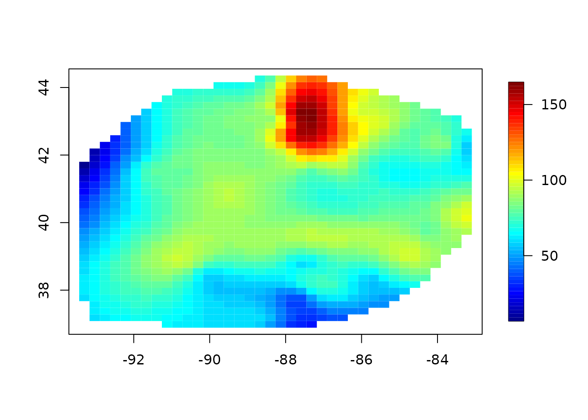
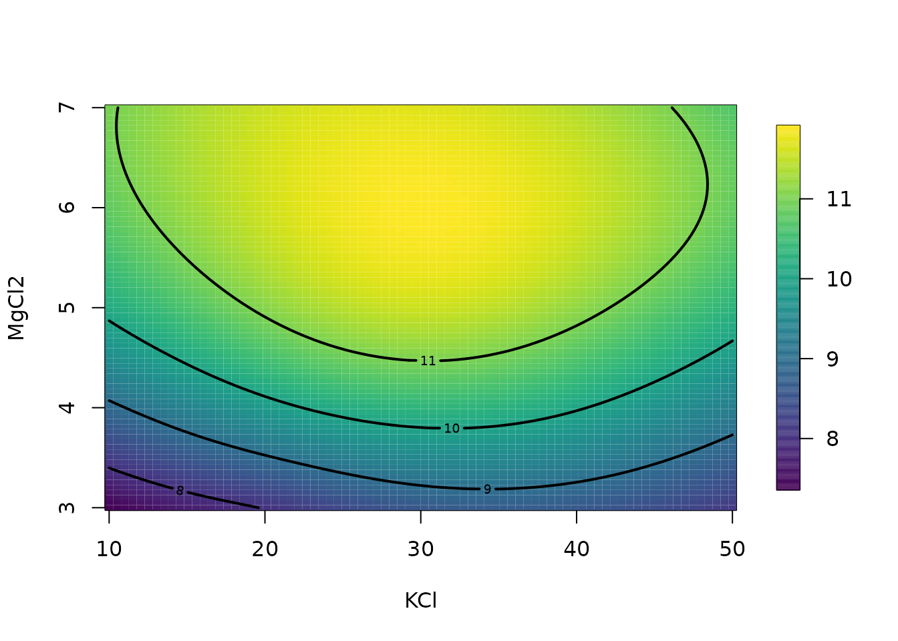
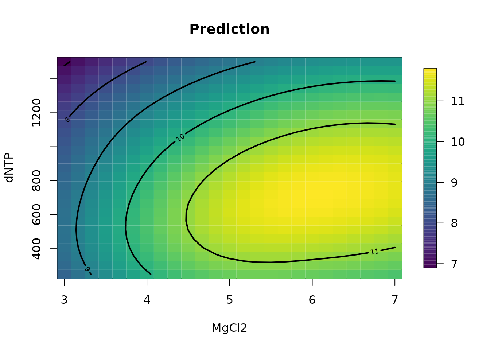
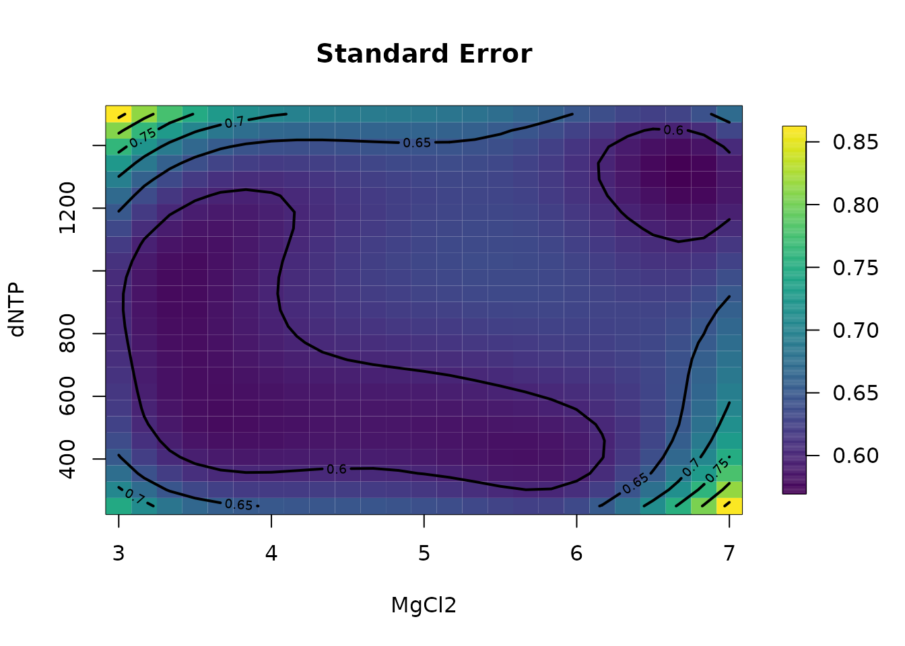
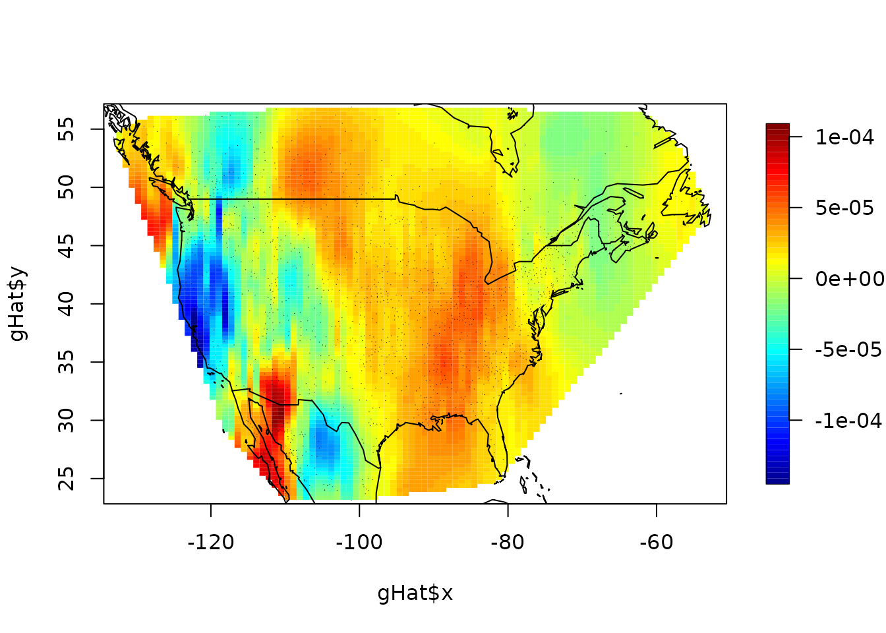

library(fields)
#> Loading required package: spam
#> Spam version 2.9-1 (2022-08-07) is loaded.
#> Type 'help( Spam)' or 'demo( spam)' for a short introduction
#> and overview of this package.
#> Help for individual functions is also obtained by adding the
#> suffix '.spam' to the function name, e.g. 'help( chol.spam)'.
#>
#> Attaching package: 'spam'
#> The following objects are masked from 'package:base':
#>
#> backsolve, forwardsolve
#> Loading required package: viridis
#> Loading required package: viridisLite
#>
#> Try help(fields) to get started.
data(ozone2)
x <- ozone2$lon.lat
y <- ozone2$y[16, ]
obj <- Tps(x, y)
# obj<- spatialProcess(x,y) # or try the alternative model:
fit <- predictSurface(obj, nx = 40, ny = 40)
str(fit)
#> List of 9
#> $ x : num [1:40] -93.6 -93.3 -93 -92.8 -92.5 ...
#> $ y : num [1:40] 36.8 37 37.2 37.4 37.6 ...
#> $ nx : int 40
#> $ ny : int 40
#> $ xlab : chr "X"
#> $ ylab : chr "Y"
#> $ xy : int [1:2] 1 2
#> $ z : num [1:40, 1:40] NA NA NA NA NA NA NA NA NA NA ...
#> $ grid1D: logi FALSE
imagePlot(fit)
# predicting a 2d surface holding other variables fixed.
fit <- Tps(BD[, 1:4], BD$lnya) # fit surface to data
# evaluate fitted surface for first two
# variables holding other two fixed at median values
out.p <- predictSurface(fit)
surface(out.p, type = "C")
# plot surface for second and fourth variables
# on specific grid.
glist <- list(
KCL = 29.77, MgCl2 = seq(3, 7, , 25), KPO4 = 32.13,
dNTP = seq(250, 1500, length.out = 25)
)
out.p <- predictSurface(fit, glist)
surface(out.p, type = "C"); title("Prediction")
out.p <- predictSurfaceSE(fit, glist)
surface(out.p, type = "C"); title("Standard Error")
mKrig/spatialProcess objects
## Not run:
data(NorthAmericanRainfall)
x <- cbind(
NorthAmericanRainfall$longitude,
NorthAmericanRainfall$latitude
)
y <- log10(NorthAmericanRainfall$precip)
mKrigObject <- mKrig(x, log10(y),
lambda = .024,
cov.args = list(
aRange = 5.87,
Covariance = "Matern",
smoothness = 1.0
),
sigma2 = .157
)
gridList <- list(
x = seq(-134, -51, length.out = 100),
y = seq(23, 57, length.out = 100)
)
# exact prediction
system.time(
gHat <- predictSurface(mKrigObject, gridList)
)
#> user system elapsed
#> 5.545 0.281 5.694
# aproximate
system.time(
gHat1 <- predictSurface(mKrigObject, gridList,
fast = TRUE
)
)
#> user system elapsed
#> 0.212 0.076 0.150
# don't worry about the warning ...
# just indicates some observation locations are located
# in the same grid box.
# approximation error omitting the NAs from outside the convex hull
stats(log10(abs(c(gHat$z - gHat1$z))))
#> [,1]
#> N 6818.0000000
#> mean -4.7751903
#> Std.Dev. 0.4749623
#> min -8.5139248
#> Q1 -4.9843999
#> median -4.6855700
#> Q3 -4.4606879
#> max -3.8448445
#> missing values 3182.0000000
image.plot(gHat$x, gHat$y, (gHat$z - gHat1$z))
points(x, pch = ".", cex = .5)
world(add = TRUE)